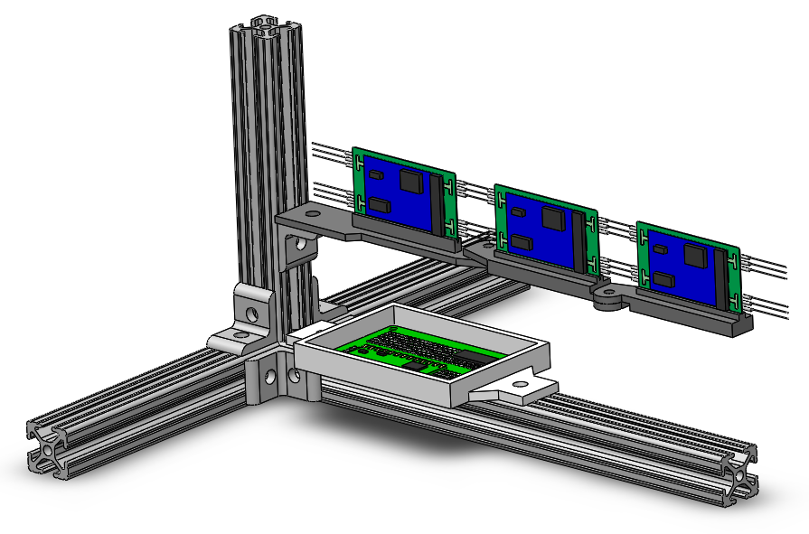
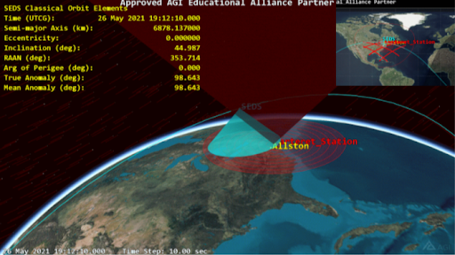
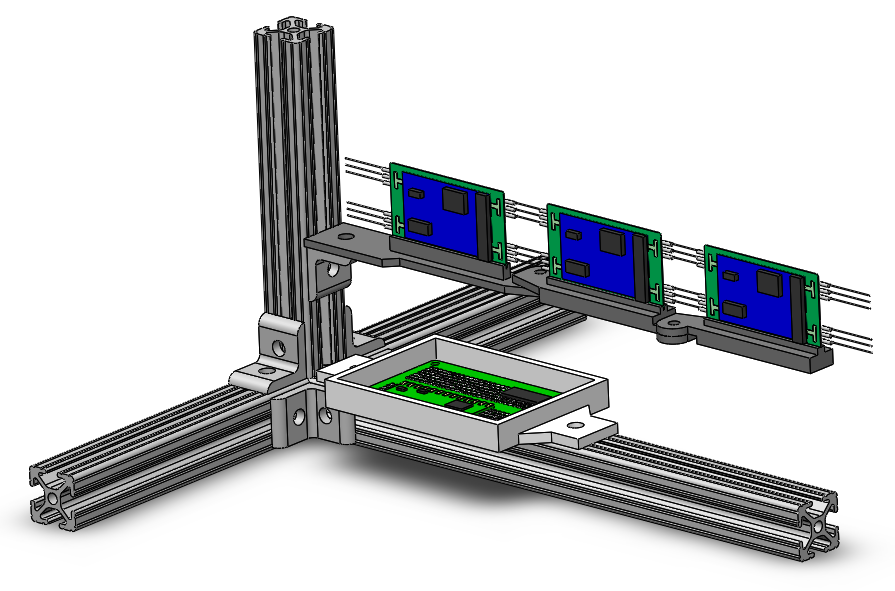
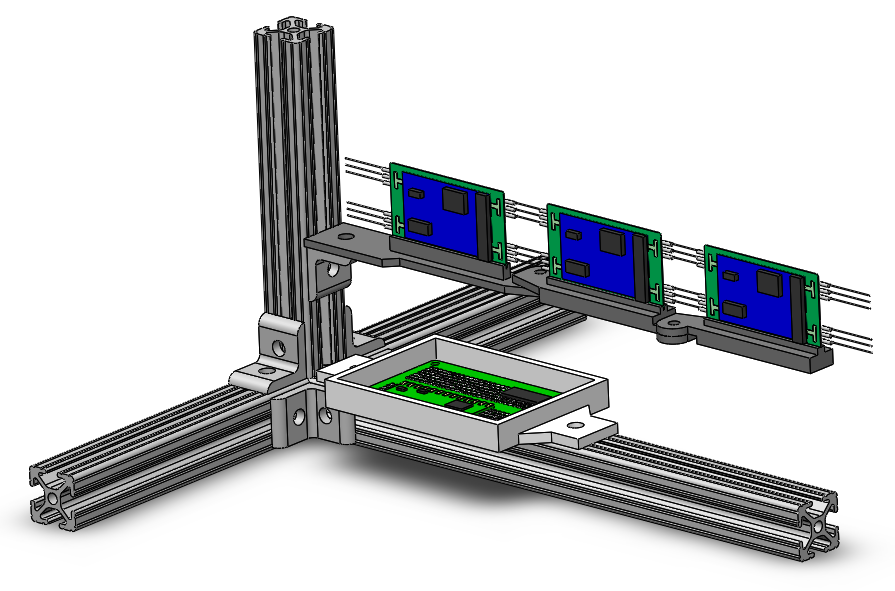

The Harvard Rocket Propulsion Group is a student-led engineering team within Harvard's SEDS chapter. Our mission is to develop increasingly ambitious liquid bipropellant propulsion systems from spark torch igniters, to full-scale, flight-configuration engines. Our goal is to provide passionate student engineers with industry-applicable experience in the design, manufacturing, hot fire, and test flight of propulsion systems, and to expand Harvard's footprint into the aerospace landscape.

Founder:Technical Overview and Presentation:With similar projects having been previously rejected by Harvard administrators, I sought to compile a comprehensive and compelling technical outline for the project demonstrating its balance of feasibility and ambition. I conducted an extensive propulsion literature review and interviewed more than two dozen collegiate and industry experts to construct a 60-slide outline for HRPG. I presented this outline to administrators at the Harvard Engineering and the EH&S Office. After receiving approval, I recruited a team of 12 and raised $8000 toward HRPG's first project: a gas/liquid heatsink spark torch ignitor.Payload Test Development:Accurate payload deployment test and evaluation requires replicating a 0G environment like that of low Earth orbit. To this end I led the design and construction of a gravity-offloading test stand with low-friction hinges to accurately and quantifiably evaluate the performance of the nitinol. To maintain accurate independent variables, the stand includes integrated thermocouples to provide real-time data as to the temperature of the wire as it is actuated.

President:Orbital Plotting and Central ComputerAs a Bus Team member, I learned Ansys' Systems Tool Kit to model our CubSat’s orbital trajectory and communication coverage. I also selected the satellite's on-board computer based on low Earth orbit environment and payload requirements. Finally, I co-authored a white paper on CubeSat design entitled "A Reliable Means of Power Collection and Storage Using a Deployable Soft, Rollable Solar Panel" for submission to NASA's CubeSat Launch Initiative (CSLI).

 
